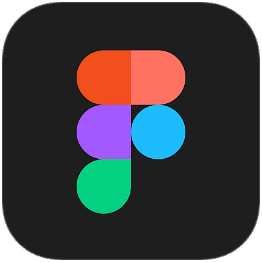
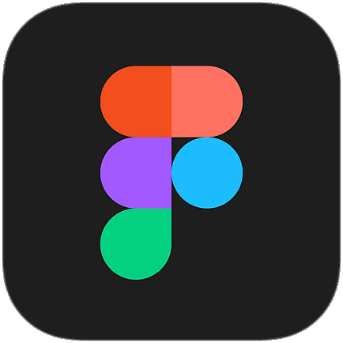

Da criação à concretização, design digital e gráfico com propósito
ProjetosMais que estética, soluções que comunicam e conectam
ContatoEscola de Pós-graduação UFG
PPRPG/UFG
2024
brandingsite
Com o objetivo de ampliar e fortalecer a formação acadêmica, a Escola de Pós-Graduação da Universidade Federal de Goiás (UFG) surge oferecendo uma variedade de cursos de especialização, mestrado e doutorado, atendendo às demandas de diversas áreas do conhecimento. Esses programas visam proporcionar uma formação sólida, integrando teoria e prática, e contribuindo para o desenvolvimento regional e nacional.
Quem conta um conto aumenta um ponto!
PPGEEB/UFG
2024
sitee-book
O e-book "Quem Conta um Conto Aumenta um Ponto! Relatos de uma experiência literária na Educação Básica" apresenta uma intervenção pedagógica realizada entre 2021 e 2022 em uma escola pública de Goiânia, com turmas do 9º ano e do Ensino Médio. Essa intervenção, parte de uma dissertação de mestrado do Programa de Pós-Graduação em Ensino na Educação Básica do CEPAE/UFG, explorou a leitura e análise de contos de Machado de Assis e suas adaptações em histórias em quadrinhos (HQs). O objetivo foi utilizar essas obras como estratégia didática para fomentar a formação de leitores na educação básica.
Como elaborar um resumo para seu trabalho acadêmico?
SIBI/UFG
2023
branding
O "Como elaborar um resumo para seu trabalho acadêmico?" foi um projeto de oficina realizado pela Biblioteca Central da UFG em parceria com o Centro Integrado de Aprendizagem em Rede (CIAR/UFG) em comemoração aos 50 anos de fundação da maior biblioteca da universidade, localizado no campus Samambaia. A oficina era destinada a todos acadêmicos da universidade como também para a comunidade externa.
.comuniqué
.comuniqué
2022
brandingsite
A .comuniqué tem como objetivo inovar o cenário de interatividade para o desenvolvimento de aplicações web, partindo de um diferencial de design. O uniqué do .comuniqué transmite a ideia único, a intenção é deles colaborar com comunicação digital de forma singular e inovadora. A equipe (como eles se autodenomina) é composta por designers e programadores que combinam design inovador, a interatividade alinhado a uma boa experiência de usuário.
Designer pleno, tocantinense. Formado pela PUC-GO e radicado em Goiânia, minhas áreas de interesse e atuação no design envolvem o digital e o gráfico.
Integro múltiplas expertises para desenvolver soluções em
- design gráfico
- identidade visual
- editorial
- ui/ux design
- visualização de dados
"Um bom design vai além da estética. Minha abordagem é estratégica, proposital e criada para gerar clareza, reconhecimento e impacto duradouro."
Olá, sou Victor Frazão
formação acadêmica
2016-2020
Pontifícia Universidade Católica do Goiás, graduação em Design Pleno.
2025-present
Design Circuit, Especialização em Design UX/UX.
clientes
experiência profissional
2018-2019
IBC Editora | Estágio e colaboração na produção gráfica de obras literárias | Goiânia, Brasil.
2020-2021
IBC Editora | Designer Júnior | Diagramador e direção de projetos gráficos literários | Goiânia, Brasil.
2021-present
CIAR UFG | Designer Senior | Diagramação e direção de projetos gráficos impressos e digitais. Desenvolvimento de Identidade Visual para cursos, produção de e-books e desenvolvimento de sites do protótipo à programação. | Goiânia, Brasil.
soft&skills


 
